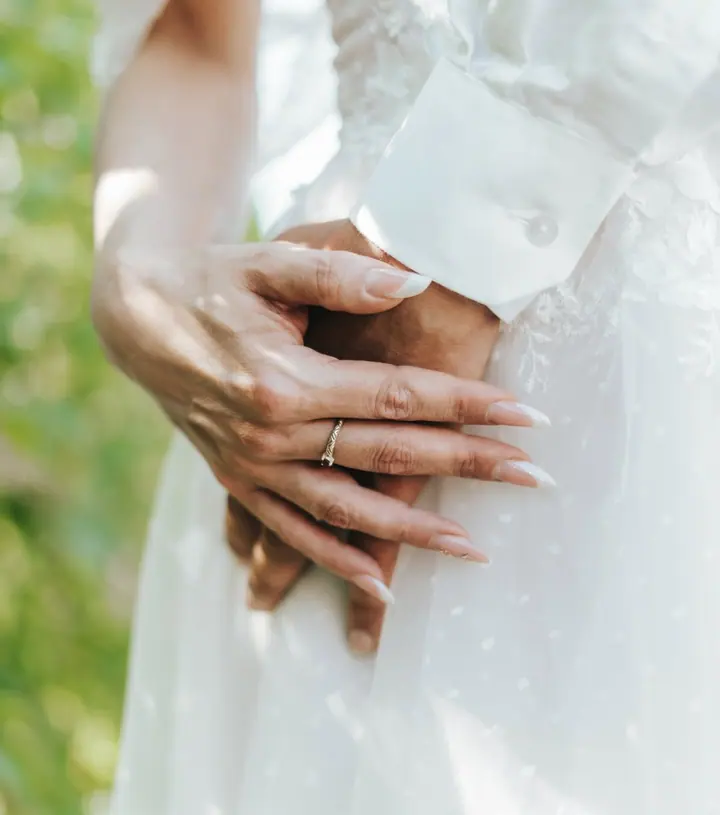
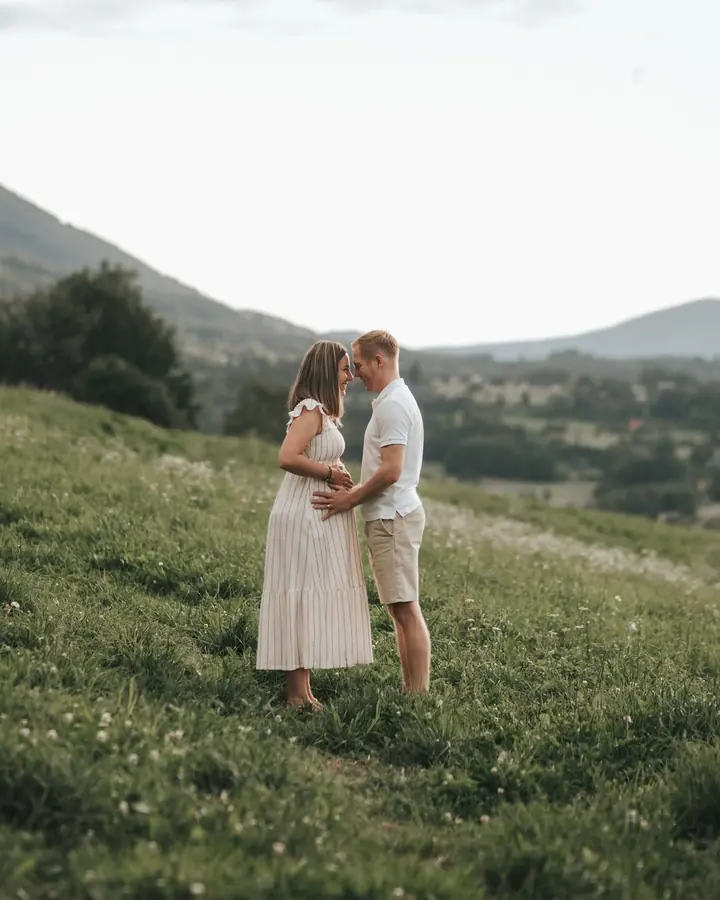
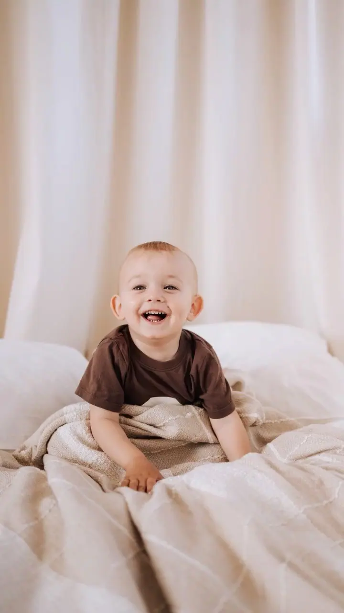

Svatební focení
Fotím krátké focení obřadu s portréty novomanželů i celý den od příprav nevěsty a ženicha až po večerní zábavu. Vybrat si můžete ze tří balíčků podle toho, jak dlouho mám být s vámi.

Jmenuji se Vendula Rojíčková a pod značkou Příběhy z objektivu fotím svatby, páry i rodiny s nejmenšími. Nejvíc mě baví detaily, ze kterých se skládá celý příběh. Fotím …
Rezervovat termínJsem Vendula a věnuji se storytelling fotografii. Nehledám jen hezké pózy, ale hlavně příběh, který se mezi vámi odehrává. Ruce, které se drží, pohledy, smích dítěte nebo první dny s miminkem. Často až zpětně poznáme, že obyčejné dny byly vlastně výjimečné.


Fotím svatby, rodiny, novorozence, páry, těhotenství i portréty. Kromě fotek natáčím i video, od svatebních klipů po krátká propagační videa, klidně se záběry z dronu. Ráda fotím také zvířata, i ta hodně neposedná.
Fotím venku i v ateliéru v Havířově, Těrlicku nebo v Háji ve Slezsku ve Studiu5. Záleží mi na tom, aby focení bylo pohodové a nenucené i pro ty, kdo se před objektivem stydí.
Co dělám
Fotím krátké focení obřadu s portréty novomanželů i celý den od příprav nevěsty a ženicha až po večerní zábavu. Vybrat si můžete ze tří balíčků podle toho, jak dlouho mám být s vámi.
Fotím rodiny, miminka a obyčejné společné chvíle tak, aby z nich vznikl ucelený příběh. Při storytelling focení je víc emocí, víc příběhu a víc momentů.
Fotím portréty a párová, těhotenská i business focení venku nebo v ateliéru v Havířově, Těrlicku či Háji ve Slezsku (Studio5).
Natáčím krátké i dlouhé svatební klipy a propagační videa pro reels nebo na úvod webu. Na přání i se záběry z dronu.
Postup
Ozvěte se e-mailem nebo zprávou. U běžného focení je dobré rezervovat aspoň měsíc dopředu, u svatby ideálně půl roku až rok předem.
Vyberete si balíček, nebo vám podle vašich představ připravím nabídku na míru. Probereme místo, termín a co by na fotkách nemělo chybět.
Běžné focení trvá zhruba 1 až 2 hodiny, svatba několik hodin až celý den. Fotím v klidu a nechávám prostor pro přirozené chvíle.
Fotky pečlivě vyberu a upravím a pošlu vám je v digitální podobě. Kolik jich dostanete, záleží na zvoleném balíčku.
Otázky
Nejlépe aspoň měsíc dopředu u běžného focení. Svatbu doporučuji plánovat s větším předstihem, ideálně půl roku až rok dopředu.
Ráda vám připravím individuální nabídku podle vašich představ a potřeb. Stačí mi napsat, co přesně hledáte.
Záleží na typu focení a vašich představách. Běžné focení trvá přibližně 1 až 2 hodiny, u větších projektů nebo svateb jde o několik hodin až celý den.
Ano. Natáčím krátké i dlouhé svatební klipy a propagační videa. Cena se odvíjí od délky videa, použití dronu, mluveného komentáře nebo počtu lokalit.